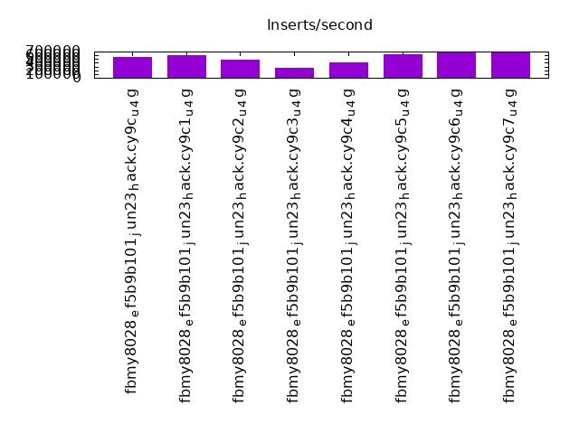
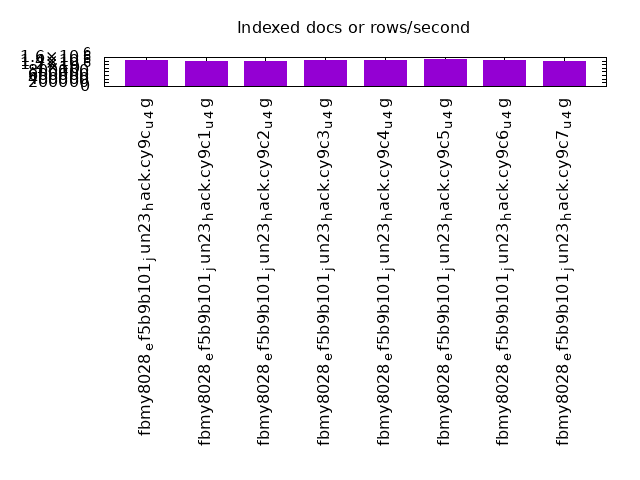
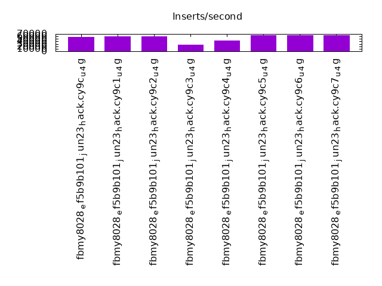
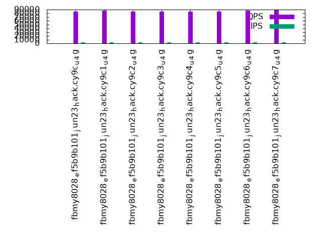
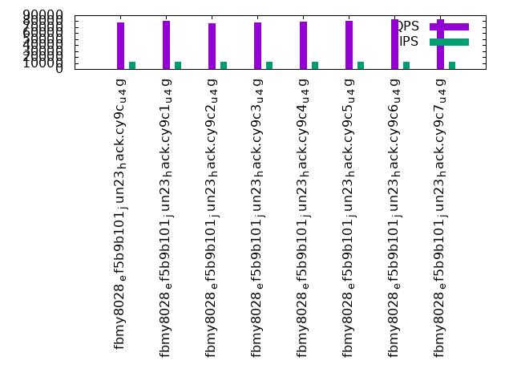
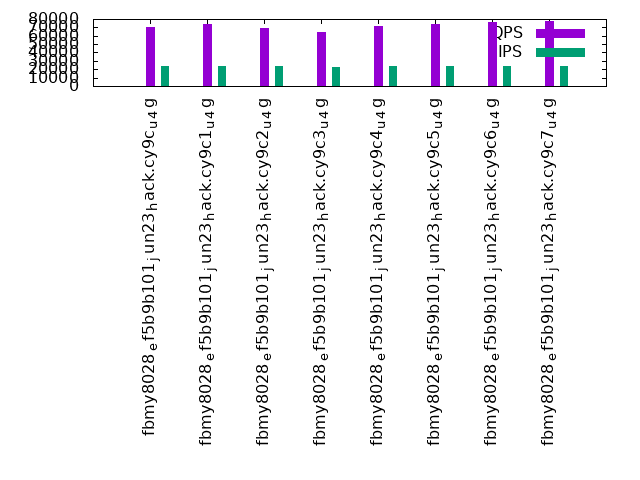

This is a report for the insert benchmark with 480M docs and 24 client(s). It is generated by scripts (bash, awk, sed) and Tufte might not be impressed. An overview of the insert benchmark is here and a short update is here. Below, by DBMS, I mean DBMS+version.config. An example is my8020.c10b40 where my means MySQL, 8020 is version 8.0.20 and c10b40 is the name for the configuration file.
The test server has 80 cores with hyperthreads enabled, 256G RAM and fast storage. The benchmark was run with 24 client and there were 1 or 3 connections per client (1 for queries or inserts without rate limits, 1+1 for rate limited inserts+deletes). There are 24 tables, with a client per table. It loads 480M rows without secondary indexes, creates secondary indexes, then inserts 1200M rows with a delete per insert to avoid growing the table. It then does 3 read+write tests for 3600s each that do queries as fast as possible with 100, 500 and then 1000 inserts/second/client concurrent with the queries and 1000 deletes/second to avoid growing the table. The database is cached by the OS but not by RocksDB
The tested DBMS are:
The numbers are inserts/s for l.i0 and l.i1, indexed docs (or rows) /s for l.x and queries/s for q*.2. The values are the average rate over the entire test for inserts (IPS) and queries (QPS). The range of values for IPS and QPS is split into 3 parts: bottom 25%, middle 50%, top 25%. Values in the bottom 25% have a red background, values in the top 25% have a green background and values in the middle have no color. A gray background is used for values that can be ignored because the DBMS did not sustain the target insert rate. Red backgrounds are not used when the minimum value is within 80% of the max value.
| dbms | l.i0 | l.x | l.i1 | q100.1 | q500.1 | q1000.1 |
|---|---|---|---|---|---|---|
| fbmy8028_ef5b9b101_jun23_hack.cy9c_u_4g | 561404 | 1412059 | 58114 | 84558 | 77717 | 70791 |
| fbmy8028_ef5b9b101_jun23_hack.cy9c1_u_4g | 601504 | 1367806 | 59898 | 87473 | 80768 | 74048 |
| fbmy8028_ef5b9b101_jun23_hack.cy9c2_u_4g | 481444 | 1403801 | 59818 | 83975 | 77128 | 69040 |
| fbmy8028_ef5b9b101_jun23_hack.cy9c3_u_4g | 277296 | 1416224 | 25684 | 84972 | 78021 | 64777 |
| fbmy8028_ef5b9b101_jun23_hack.cy9c4_u_4g | 422164 | 1433134 | 43791 | 84885 | 79559 | 72016 |
| fbmy8028_ef5b9b101_jun23_hack.cy9c5_u_4g | 635762 | 1472699 | 64284 | 85242 | 80876 | 73876 |
| fbmy8028_ef5b9b101_jun23_hack.cy9c6_u_4g | 685714 | 1412059 | 64516 | 87770 | 83190 | 76920 |
| fbmy8028_ef5b9b101_jun23_hack.cy9c7_u_4g | 686695 | 1403801 | 64492 | 88002 | 83531 | 77162 |
This table has relative throughput, throughput for the DBMS relative to the DBMS in the first line, using the absolute throughput from the previous table. Values less than 0.95 have a yellow background. Values greater than 1.05 have a blue background.
| dbms | l.i0 | l.x | l.i1 | q100.1 | q500.1 | q1000.1 |
|---|---|---|---|---|---|---|
| fbmy8028_ef5b9b101_jun23_hack.cy9c_u_4g | 1.00 | 1.00 | 1.00 | 1.00 | 1.00 | 1.00 |
| fbmy8028_ef5b9b101_jun23_hack.cy9c1_u_4g | 1.07 | 0.97 | 1.03 | 1.03 | 1.04 | 1.05 |
| fbmy8028_ef5b9b101_jun23_hack.cy9c2_u_4g | 0.86 | 0.99 | 1.03 | 0.99 | 0.99 | 0.98 |
| fbmy8028_ef5b9b101_jun23_hack.cy9c3_u_4g | 0.49 | 1.00 | 0.44 | 1.00 | 1.00 | 0.92 |
| fbmy8028_ef5b9b101_jun23_hack.cy9c4_u_4g | 0.75 | 1.01 | 0.75 | 1.00 | 1.02 | 1.02 |
| fbmy8028_ef5b9b101_jun23_hack.cy9c5_u_4g | 1.13 | 1.04 | 1.11 | 1.01 | 1.04 | 1.04 |
| fbmy8028_ef5b9b101_jun23_hack.cy9c6_u_4g | 1.22 | 1.00 | 1.11 | 1.04 | 1.07 | 1.09 |
| fbmy8028_ef5b9b101_jun23_hack.cy9c7_u_4g | 1.22 | 0.99 | 1.11 | 1.04 | 1.07 | 1.09 |
This lists the average rate of inserts/s for the tests that do inserts concurrent with queries. For such tests the query rate is listed in the table above. The read+write tests are setup so that the insert rate should match the target rate every second. Cells that are not at least 95% of the target have a red background to indicate a failure to satisfy the target.
| dbms | q100.1 | q500.1 | q1000.1 |
|---|---|---|---|
| fbmy8028_ef5b9b101_jun23_hack.cy9c_u_4g | 2381 | 11911 | 23828 |
| fbmy8028_ef5b9b101_jun23_hack.cy9c1_u_4g | 2381 | 11907 | 23828 |
| fbmy8028_ef5b9b101_jun23_hack.cy9c2_u_4g | 2381 | 11907 | 23828 |
| fbmy8028_ef5b9b101_jun23_hack.cy9c3_u_4g | 2381 | 11907 | 23120 |
| fbmy8028_ef5b9b101_jun23_hack.cy9c4_u_4g | 2381 | 11907 | 23828 |
| fbmy8028_ef5b9b101_jun23_hack.cy9c5_u_4g | 2382 | 11907 | 23828 |
| fbmy8028_ef5b9b101_jun23_hack.cy9c6_u_4g | 2381 | 11907 | 23828 |
| fbmy8028_ef5b9b101_jun23_hack.cy9c7_u_4g | 2381 | 11907 | 23828 |
| target | 2400 | 12000 | 24000 |
l.i0: load without secondary indexes. Graphs for performance per 1-second interval are here.
Average throughput:
Insert response time histogram: each cell has the percentage of responses that take <= the time in the header and max is the max response time in seconds. For the max column values in the top 25% of the range have a red background and in the bottom 25% of the range have a green background. The red background is not used when the min value is within 80% of the max value.
| dbms | 256us | 1ms | 4ms | 16ms | 64ms | 256ms | 1s | 4s | 16s | gt | max |
|---|---|---|---|---|---|---|---|---|---|---|---|
| fbmy8028_ef5b9b101_jun23_hack.cy9c_u_4g | 54.842 | 45.114 | 0.002 | 0.042 | 0.096 | ||||||
| fbmy8028_ef5b9b101_jun23_hack.cy9c1_u_4g | 78.795 | 20.846 | 0.316 | 0.043 | 0.108 | ||||||
| fbmy8028_ef5b9b101_jun23_hack.cy9c2_u_4g | 34.115 | 65.841 | 0.002 | 0.042 | 0.100 | ||||||
| fbmy8028_ef5b9b101_jun23_hack.cy9c3_u_4g | 80.446 | 12.963 | 2.486 | 4.105 | nonzero | 0.266 | |||||
| fbmy8028_ef5b9b101_jun23_hack.cy9c4_u_4g | 60.591 | 34.693 | 4.648 | 0.068 | 0.241 | ||||||
| fbmy8028_ef5b9b101_jun23_hack.cy9c5_u_4g | 77.258 | 22.695 | 0.003 | 0.043 | 0.191 | ||||||
| fbmy8028_ef5b9b101_jun23_hack.cy9c6_u_4g | 88.002 | 11.955 | 0.001 | 0.043 | 0.096 | ||||||
| fbmy8028_ef5b9b101_jun23_hack.cy9c7_u_4g | 88.430 | 11.526 | 0.001 | 0.043 | 0.116 |
Performance metrics for the DBMS listed above. Some are normalized by throughput, others are not. Legend for results is here.
ips qps rps rmbps wps wmbps rpq rkbpq wpi wkbpi csps cpups cspq cpupq dbgb1 dbgb2 rss maxop p50 p99 tag 561404 0 0 0.0 1798.4 120.1 0.000 0.000 0.003 0.219 359025 39.0 0.640 56 15.2 16.6 3.9 0.096 24376 14383 480m.fbmy8028_ef5b9b101_jun23_hack.cy9c_u_4g 601504 0 0 0.0 1994.0 152.0 0.000 0.000 0.003 0.259 119326 39.5 0.198 53 21.7 23.1 4.3 0.108 27672 7393 480m.fbmy8028_ef5b9b101_jun23_hack.cy9c1_u_4g 481444 0 0 0.0 1633.4 134.8 0.000 0.000 0.003 0.287 426933 35.8 0.887 59 15.4 16.8 4.1 0.100 21079 12389 480m.fbmy8028_ef5b9b101_jun23_hack.cy9c2_u_4g 277296 0 0 0.0 1097.3 88.9 0.000 0.000 0.004 0.328 73241 18.7 0.264 54 15.6 16.9 4.4 0.266 1898 500 480m.fbmy8028_ef5b9b101_jun23_hack.cy9c3_u_4g 422164 0 0 0.0 1412.3 122.7 0.000 0.000 0.003 0.298 216334 27.7 0.512 52 15.1 16.5 4.1 0.241 19688 2797 480m.fbmy8028_ef5b9b101_jun23_hack.cy9c4_u_4g 635762 0 0 0.0 2229.3 198.2 0.000 0.000 0.004 0.319 242901 41.1 0.382 52 15.1 16.5 4.3 0.191 27373 17284 480m.fbmy8028_ef5b9b101_jun23_hack.cy9c5_u_4g 685714 0 0 0.0 2366.7 211.3 0.000 0.000 0.003 0.316 138736 41.0 0.202 48 15.2 16.5 4.3 0.096 29566 25774 480m.fbmy8028_ef5b9b101_jun23_hack.cy9c6_u_4g 686695 0 0 0.0 2403.5 214.6 0.000 0.000 0.004 0.320 137659 40.8 0.200 48 15.2 16.5 4.5 0.116 29374 25874 480m.fbmy8028_ef5b9b101_jun23_hack.cy9c7_u_4g
l.x: create secondary indexes.
Average throughput:
Performance metrics for the DBMS listed above. Some are normalized by throughput, others are not. Legend for results is here.
ips qps rps rmbps wps wmbps rpq rkbpq wpi wkbpi csps cpups cspq cpupq dbgb1 dbgb2 rss maxop p50 p99 tag 1412059 0 29 0.2 1811.7 129.4 0.000 0.000 0.001 0.094 31718 27.1 0.022 15 32.4 33.7 9.7 0.003 NA NA 480m.fbmy8028_ef5b9b101_jun23_hack.cy9c_u_4g 1367806 0 28 0.2 2038.7 141.5 0.000 0.000 0.001 0.106 35227 28.2 0.026 16 32.4 33.7 10.1 0.007 NA NA 480m.fbmy8028_ef5b9b101_jun23_hack.cy9c1_u_4g 1403801 0 29 0.2 1818.3 162.0 0.000 0.000 0.001 0.118 34094 27.9 0.024 16 32.3 33.7 9.7 0.004 NA NA 480m.fbmy8028_ef5b9b101_jun23_hack.cy9c2_u_4g 1416224 0 29 0.2 1826.2 148.9 0.000 0.000 0.001 0.108 33625 27.8 0.024 16 32.4 33.7 10.0 0.003 NA NA 480m.fbmy8028_ef5b9b101_jun23_hack.cy9c3_u_4g 1433134 0 30 0.2 1814.4 167.3 0.000 0.000 0.001 0.120 33326 27.7 0.023 15 32.4 33.7 9.9 0.003 NA NA 480m.fbmy8028_ef5b9b101_jun23_hack.cy9c4_u_4g 1472699 0 30 0.2 1869.4 181.2 0.000 0.000 0.001 0.126 32848 28.1 0.022 15 32.4 33.7 10.3 0.004 NA NA 480m.fbmy8028_ef5b9b101_jun23_hack.cy9c5_u_4g 1412059 0 29 0.2 1788.0 165.8 0.000 0.000 0.001 0.120 34005 27.4 0.024 16 32.4 33.7 10.2 0.004 NA NA 480m.fbmy8028_ef5b9b101_jun23_hack.cy9c6_u_4g 1403801 0 29 0.2 1790.5 164.6 0.000 0.000 0.001 0.120 34407 28.0 0.025 16 32.4 33.7 9.9 0.004 NA NA 480m.fbmy8028_ef5b9b101_jun23_hack.cy9c7_u_4g
l.i1: continue load after secondary indexes created. Graphs for performance per 1-second interval are here.
Average throughput:
Insert response time histogram: each cell has the percentage of responses that take <= the time in the header and max is the max response time in seconds. For the max column values in the top 25% of the range have a red background and in the bottom 25% of the range have a green background. The red background is not used when the min value is within 80% of the max value.
| dbms | 256us | 1ms | 4ms | 16ms | 64ms | 256ms | 1s | 4s | 16s | gt | max |
|---|---|---|---|---|---|---|---|---|---|---|---|
| fbmy8028_ef5b9b101_jun23_hack.cy9c_u_4g | 0.198 | 17.970 | 81.636 | 0.140 | 0.040 | 0.005 | 0.009 | 0.002 | 25.904 | ||
| fbmy8028_ef5b9b101_jun23_hack.cy9c1_u_4g | 1.513 | 24.208 | 73.361 | 0.533 | 0.382 | 0.002 | 2.758 | ||||
| fbmy8028_ef5b9b101_jun23_hack.cy9c2_u_4g | 0.036 | 16.158 | 83.269 | 0.474 | 0.054 | 0.008 | 2.283 | ||||
| fbmy8028_ef5b9b101_jun23_hack.cy9c3_u_4g | 0.027 | 15.658 | 68.890 | 11.604 | 3.820 | 0.001 | 1.186 | ||||
| fbmy8028_ef5b9b101_jun23_hack.cy9c4_u_4g | 0.025 | 15.462 | 77.098 | 7.381 | 0.034 | nonzero | 2.478 | ||||
| fbmy8028_ef5b9b101_jun23_hack.cy9c5_u_4g | 0.026 | 18.507 | 81.462 | 0.005 | 0.204 | ||||||
| fbmy8028_ef5b9b101_jun23_hack.cy9c6_u_4g | 0.025 | 18.844 | 81.128 | 0.003 | 0.185 | ||||||
| fbmy8028_ef5b9b101_jun23_hack.cy9c7_u_4g | 0.027 | 18.733 | 81.237 | 0.003 | 0.146 |
Delete response time histogram: each cell has the percentage of responses that take <= the time in the header and max is the max response time in seconds. For the max column values in the top 25% of the range have a red background and in the bottom 25% of the range have a green background. The red background is not used when the min value is within 80% of the max value.
| dbms | 256us | 1ms | 4ms | 16ms | 64ms | 256ms | 1s | 4s | 16s | gt | max |
|---|---|---|---|---|---|---|---|---|---|---|---|
| fbmy8028_ef5b9b101_jun23_hack.cy9c_u_4g | 0.201 | 18.273 | 81.332 | 0.140 | 0.040 | 0.004 | 0.009 | 0.002 | 26.492 | ||
| fbmy8028_ef5b9b101_jun23_hack.cy9c1_u_4g | 1.538 | 24.371 | 73.180 | 0.528 | 0.381 | 0.002 | 2.758 | ||||
| fbmy8028_ef5b9b101_jun23_hack.cy9c2_u_4g | 0.037 | 16.056 | 83.371 | 0.475 | 0.054 | 0.008 | 2.283 | ||||
| fbmy8028_ef5b9b101_jun23_hack.cy9c3_u_4g | 0.028 | 16.302 | 68.253 | 11.600 | 3.815 | 0.001 | 1.223 | ||||
| fbmy8028_ef5b9b101_jun23_hack.cy9c4_u_4g | 0.027 | 16.330 | 76.262 | 7.347 | 0.033 | nonzero | 2.478 | ||||
| fbmy8028_ef5b9b101_jun23_hack.cy9c5_u_4g | 0.028 | 19.518 | 80.449 | 0.005 | 0.204 | ||||||
| fbmy8028_ef5b9b101_jun23_hack.cy9c6_u_4g | 0.027 | 20.049 | 79.921 | 0.003 | 0.184 | ||||||
| fbmy8028_ef5b9b101_jun23_hack.cy9c7_u_4g | 0.029 | 19.931 | 80.037 | 0.003 | 0.180 |
Performance metrics for the DBMS listed above. Some are normalized by throughput, others are not. Legend for results is here.
ips qps rps rmbps wps wmbps rpq rkbpq wpi wkbpi csps cpups cspq cpupq dbgb1 dbgb2 rss maxop p50 p99 tag 58114 0 7 0.4 1243.3 75.1 0.000 0.007 0.021 1.324 162446 22.3 2.795 307 43.3 43.6 6.8 25.904 2647 0 480m.fbmy8028_ef5b9b101_jun23_hack.cy9c_u_4g 59898 0 7 0.4 1219.5 73.4 0.000 0.007 0.020 1.254 80057 22.1 1.337 295 44.3 44.6 6.8 2.758 2747 300 480m.fbmy8028_ef5b9b101_jun23_hack.cy9c1_u_4g 59818 0 7 0.4 1195.7 74.6 0.000 0.007 0.020 1.277 296802 20.0 4.962 267 49.8 50.2 5.6 2.283 2647 100 480m.fbmy8028_ef5b9b101_jun23_hack.cy9c2_u_4g 25684 0 3 0.2 704.2 43.0 0.000 0.007 0.027 1.716 60522 8.6 2.356 268 42.0 42.3 5.0 1.186 350 50 480m.fbmy8028_ef5b9b101_jun23_hack.cy9c3_u_4g 43791 0 5 0.3 1105.7 67.7 0.000 0.007 0.025 1.584 111776 13.3 2.552 243 37.7 38.0 5.0 2.478 2148 300 480m.fbmy8028_ef5b9b101_jun23_hack.cy9c4_u_4g 64284 0 8 0.4 1603.3 99.9 0.000 0.007 0.025 1.591 129249 18.5 2.011 230 37.7 38.0 5.2 0.204 2697 2398 480m.fbmy8028_ef5b9b101_jun23_hack.cy9c5_u_4g 64516 0 8 0.4 1609.7 100.5 0.000 0.007 0.025 1.595 85876 17.6 1.331 218 38.1 38.3 5.3 0.185 2697 2447 480m.fbmy8028_ef5b9b101_jun23_hack.cy9c6_u_4g 64492 0 8 0.4 1614.5 101.0 0.000 0.007 0.025 1.604 85840 17.7 1.331 220 38.0 38.3 5.3 0.146 2697 2447 480m.fbmy8028_ef5b9b101_jun23_hack.cy9c7_u_4g
q100.1: range queries with 100 insert/s per client. Graphs for performance per 1-second interval are here.
Average throughput:
Query response time histogram: each cell has the percentage of responses that take <= the time in the header and max is the max response time in seconds. For max values in the top 25% of the range have a red background and in the bottom 25% of the range have a green background. The red background is not used when the min value is within 80% of the max value.
| dbms | 256us | 1ms | 4ms | 16ms | 64ms | 256ms | 1s | 4s | 16s | gt | max |
|---|---|---|---|---|---|---|---|---|---|---|---|
| fbmy8028_ef5b9b101_jun23_hack.cy9c_u_4g | 42.570 | 57.429 | 0.002 | nonzero | nonzero | 0.059 | |||||
| fbmy8028_ef5b9b101_jun23_hack.cy9c1_u_4g | 50.863 | 49.135 | 0.002 | nonzero | nonzero | 0.022 | |||||
| fbmy8028_ef5b9b101_jun23_hack.cy9c2_u_4g | 41.012 | 58.986 | 0.002 | nonzero | 0.008 | ||||||
| fbmy8028_ef5b9b101_jun23_hack.cy9c3_u_4g | 43.783 | 56.216 | 0.002 | nonzero | nonzero | 0.022 | |||||
| fbmy8028_ef5b9b101_jun23_hack.cy9c4_u_4g | 43.516 | 56.482 | 0.002 | nonzero | nonzero | 0.028 | |||||
| fbmy8028_ef5b9b101_jun23_hack.cy9c5_u_4g | 44.414 | 55.584 | 0.002 | nonzero | nonzero | 0.056 | |||||
| fbmy8028_ef5b9b101_jun23_hack.cy9c6_u_4g | 51.616 | 48.383 | 0.001 | nonzero | nonzero | 0.020 | |||||
| fbmy8028_ef5b9b101_jun23_hack.cy9c7_u_4g | 52.145 | 47.853 | 0.001 | nonzero | nonzero | 0.023 |
Insert response time histogram: each cell has the percentage of responses that take <= the time in the header and max is the max response time in seconds. For max values in the top 25% of the range have a red background and in the bottom 25% of the range have a green background. The red background is not used when the min value is within 80% of the max value.
| dbms | 256us | 1ms | 4ms | 16ms | 64ms | 256ms | 1s | 4s | 16s | gt | max |
|---|---|---|---|---|---|---|---|---|---|---|---|
| fbmy8028_ef5b9b101_jun23_hack.cy9c_u_4g | 99.979 | 0.021 | 0.010 | ||||||||
| fbmy8028_ef5b9b101_jun23_hack.cy9c1_u_4g | 99.973 | 0.027 | 0.014 | ||||||||
| fbmy8028_ef5b9b101_jun23_hack.cy9c2_u_4g | 97.065 | 2.935 | 0.013 | ||||||||
| fbmy8028_ef5b9b101_jun23_hack.cy9c3_u_4g | 98.432 | 1.568 | 0.011 | ||||||||
| fbmy8028_ef5b9b101_jun23_hack.cy9c4_u_4g | 98.543 | 1.457 | 0.011 | ||||||||
| fbmy8028_ef5b9b101_jun23_hack.cy9c5_u_4g | 99.959 | 0.041 | 0.009 | ||||||||
| fbmy8028_ef5b9b101_jun23_hack.cy9c6_u_4g | 98.882 | 1.118 | 0.009 | ||||||||
| fbmy8028_ef5b9b101_jun23_hack.cy9c7_u_4g | 99.796 | 0.204 | 0.001 | 0.016 |
Delete response time histogram: each cell has the percentage of responses that take <= the time in the header and max is the max response time in seconds. For max values in the top 25% of the range have a red background and in the bottom 25% of the range have a green background. The red background is not used when the min value is within 80% of the max value.
| dbms | 256us | 1ms | 4ms | 16ms | 64ms | 256ms | 1s | 4s | 16s | gt | max |
|---|---|---|---|---|---|---|---|---|---|---|---|
| fbmy8028_ef5b9b101_jun23_hack.cy9c_u_4g | 99.986 | 0.009 | 0.005 | 0.001 | 0.067 | ||||||
| fbmy8028_ef5b9b101_jun23_hack.cy9c1_u_4g | 99.988 | 0.009 | 0.003 | 0.059 | |||||||
| fbmy8028_ef5b9b101_jun23_hack.cy9c2_u_4g | 97.950 | 2.048 | 0.002 | 0.053 | |||||||
| fbmy8028_ef5b9b101_jun23_hack.cy9c3_u_4g | 99.112 | 0.884 | 0.004 | 0.053 | |||||||
| fbmy8028_ef5b9b101_jun23_hack.cy9c4_u_4g | 99.190 | 0.807 | 0.002 | 0.001 | 0.075 | ||||||
| fbmy8028_ef5b9b101_jun23_hack.cy9c5_u_4g | 99.980 | 0.019 | 0.001 | 0.031 | |||||||
| fbmy8028_ef5b9b101_jun23_hack.cy9c6_u_4g | 99.352 | 0.646 | 0.002 | 0.058 | |||||||
| fbmy8028_ef5b9b101_jun23_hack.cy9c7_u_4g | 99.920 | 0.079 | 0.001 | 0.001 | 0.068 |
Performance metrics for the DBMS listed above. Some are normalized by throughput, others are not. Legend for results is here.
ips qps rps rmbps wps wmbps rpq rkbpq wpi wkbpi csps cpups cspq cpupq dbgb1 dbgb2 rss maxop p50 p99 tag 2381 84558 0 0.0 91.2 5.3 0.000 0.000 0.038 2.287 352554 32.4 4.169 307 36.8 38.9 5.2 0.059 3564 3197 480m.fbmy8028_ef5b9b101_jun23_hack.cy9c_u_4g 2381 87473 0 0.0 91.7 5.5 0.000 0.000 0.038 2.351 364514 32.6 4.167 298 36.7 38.8 5.5 0.022 3628 3229 480m.fbmy8028_ef5b9b101_jun23_hack.cy9c1_u_4g 2381 83975 0 0.0 101.5 5.7 0.000 0.000 0.043 2.430 351109 32.4 4.181 309 36.5 36.7 5.4 0.008 3516 3149 480m.fbmy8028_ef5b9b101_jun23_hack.cy9c2_u_4g 2381 84972 0 0.0 76.5 5.0 0.000 0.000 0.032 2.148 353950 32.1 4.165 302 37.4 39.6 5.1 0.022 3564 3197 480m.fbmy8028_ef5b9b101_jun23_hack.cy9c3_u_4g 2381 84885 0 0.0 79.2 4.7 0.000 0.000 0.033 2.026 353762 32.2 4.168 303 37.4 39.5 5.1 0.028 3548 3181 480m.fbmy8028_ef5b9b101_jun23_hack.cy9c4_u_4g 2382 85242 0 0.0 79.4 4.8 0.000 0.000 0.033 2.057 355015 32.3 4.165 303 37.0 39.2 5.1 0.056 3564 3197 480m.fbmy8028_ef5b9b101_jun23_hack.cy9c5_u_4g 2381 87770 0 0.0 82.4 5.0 0.000 0.000 0.035 2.138 364765 32.4 4.156 295 37.2 39.4 5.1 0.020 3660 3293 480m.fbmy8028_ef5b9b101_jun23_hack.cy9c6_u_4g 2381 88002 0 0.0 79.8 4.7 0.000 0.000 0.034 2.033 365823 32.4 4.157 295 37.1 39.2 5.1 0.023 3692 3325 480m.fbmy8028_ef5b9b101_jun23_hack.cy9c7_u_4g
q500.1: range queries with 500 insert/s per client. Graphs for performance per 1-second interval are here.
Average throughput:
Query response time histogram: each cell has the percentage of responses that take <= the time in the header and max is the max response time in seconds. For max values in the top 25% of the range have a red background and in the bottom 25% of the range have a green background. The red background is not used when the min value is within 80% of the max value.
| dbms | 256us | 1ms | 4ms | 16ms | 64ms | 256ms | 1s | 4s | 16s | gt | max |
|---|---|---|---|---|---|---|---|---|---|---|---|
| fbmy8028_ef5b9b101_jun23_hack.cy9c_u_4g | 25.226 | 74.771 | 0.003 | nonzero | nonzero | 0.054 | |||||
| fbmy8028_ef5b9b101_jun23_hack.cy9c1_u_4g | 33.077 | 66.920 | 0.003 | nonzero | nonzero | 0.058 | |||||
| fbmy8028_ef5b9b101_jun23_hack.cy9c2_u_4g | 24.000 | 75.997 | 0.003 | nonzero | nonzero | nonzero | 0.068 | ||||
| fbmy8028_ef5b9b101_jun23_hack.cy9c3_u_4g | 25.963 | 74.034 | 0.003 | nonzero | nonzero | 0.050 | |||||
| fbmy8028_ef5b9b101_jun23_hack.cy9c4_u_4g | 29.591 | 70.406 | 0.003 | nonzero | nonzero | 0.044 | |||||
| fbmy8028_ef5b9b101_jun23_hack.cy9c5_u_4g | 32.916 | 67.081 | 0.002 | nonzero | nonzero | nonzero | 0.069 | ||||
| fbmy8028_ef5b9b101_jun23_hack.cy9c6_u_4g | 39.375 | 60.623 | 0.003 | nonzero | nonzero | nonzero | 0.065 | ||||
| fbmy8028_ef5b9b101_jun23_hack.cy9c7_u_4g | 40.367 | 59.630 | 0.002 | nonzero | nonzero | nonzero | 0.064 |
Insert response time histogram: each cell has the percentage of responses that take <= the time in the header and max is the max response time in seconds. For max values in the top 25% of the range have a red background and in the bottom 25% of the range have a green background. The red background is not used when the min value is within 80% of the max value.
| dbms | 256us | 1ms | 4ms | 16ms | 64ms | 256ms | 1s | 4s | 16s | gt | max |
|---|---|---|---|---|---|---|---|---|---|---|---|
| fbmy8028_ef5b9b101_jun23_hack.cy9c_u_4g | 18.785 | 69.467 | 11.749 | 0.040 | |||||||
| fbmy8028_ef5b9b101_jun23_hack.cy9c1_u_4g | 17.017 | 68.073 | 14.906 | 0.003 | 0.101 | ||||||
| fbmy8028_ef5b9b101_jun23_hack.cy9c2_u_4g | 24.372 | 73.320 | 2.307 | nonzero | 0.066 | ||||||
| fbmy8028_ef5b9b101_jun23_hack.cy9c3_u_4g | 32.066 | 66.161 | 1.773 | nonzero | 0.086 | ||||||
| fbmy8028_ef5b9b101_jun23_hack.cy9c4_u_4g | 13.898 | 80.054 | 6.045 | 0.002 | 0.095 | ||||||
| fbmy8028_ef5b9b101_jun23_hack.cy9c5_u_4g | 45.349 | 54.636 | 0.015 | 0.037 | |||||||
| fbmy8028_ef5b9b101_jun23_hack.cy9c6_u_4g | 18.014 | 77.280 | 4.706 | 0.001 | 0.066 | ||||||
| fbmy8028_ef5b9b101_jun23_hack.cy9c7_u_4g | 33.058 | 65.933 | 1.008 | 0.001 | 0.088 |
Delete response time histogram: each cell has the percentage of responses that take <= the time in the header and max is the max response time in seconds. For max values in the top 25% of the range have a red background and in the bottom 25% of the range have a green background. The red background is not used when the min value is within 80% of the max value.
| dbms | 256us | 1ms | 4ms | 16ms | 64ms | 256ms | 1s | 4s | 16s | gt | max |
|---|---|---|---|---|---|---|---|---|---|---|---|
| fbmy8028_ef5b9b101_jun23_hack.cy9c_u_4g | 20.622 | 67.799 | 11.579 | nonzero | 0.082 | ||||||
| fbmy8028_ef5b9b101_jun23_hack.cy9c1_u_4g | 18.037 | 67.168 | 14.791 | 0.004 | 0.101 | ||||||
| fbmy8028_ef5b9b101_jun23_hack.cy9c2_u_4g | 26.209 | 71.531 | 2.260 | nonzero | 0.071 | ||||||
| fbmy8028_ef5b9b101_jun23_hack.cy9c3_u_4g | 33.623 | 64.630 | 1.747 | nonzero | 0.087 | ||||||
| fbmy8028_ef5b9b101_jun23_hack.cy9c4_u_4g | 15.156 | 78.860 | 5.982 | 0.002 | 0.095 | ||||||
| fbmy8028_ef5b9b101_jun23_hack.cy9c5_u_4g | 48.950 | 51.030 | 0.020 | nonzero | 0.079 | ||||||
| fbmy8028_ef5b9b101_jun23_hack.cy9c6_u_4g | 19.237 | 76.117 | 4.646 | 0.001 | 0.093 | ||||||
| fbmy8028_ef5b9b101_jun23_hack.cy9c7_u_4g | 34.340 | 64.676 | 0.983 | 0.001 | 0.097 |
Performance metrics for the DBMS listed above. Some are normalized by throughput, others are not. Legend for results is here.
ips qps rps rmbps wps wmbps rpq rkbpq wpi wkbpi csps cpups cspq cpupq dbgb1 dbgb2 rss maxop p50 p99 tag 11911 77717 0 0.0 306.0 18.5 0.000 0.000 0.026 1.587 334960 34.5 4.310 355 37.3 38.7 5.3 0.054 3245 2878 480m.fbmy8028_ef5b9b101_jun23_hack.cy9c_u_4g 11907 80768 0 0.0 305.7 19.1 0.000 0.000 0.026 1.643 345901 34.6 4.283 343 37.0 38.4 5.4 0.058 3405 3021 480m.fbmy8028_ef5b9b101_jun23_hack.cy9c1_u_4g 11907 77128 0 0.0 308.7 17.9 0.000 0.000 0.026 1.539 335017 34.4 4.344 357 36.5 37.9 5.3 0.068 3261 2861 480m.fbmy8028_ef5b9b101_jun23_hack.cy9c2_u_4g 11907 78021 0 0.0 312.8 20.3 0.000 0.000 0.026 1.748 335317 34.4 4.298 353 37.7 39.1 5.2 0.050 3293 2893 480m.fbmy8028_ef5b9b101_jun23_hack.cy9c3_u_4g 11907 79559 0 0.0 322.4 21.2 0.000 0.000 0.027 1.827 341534 34.5 4.293 347 37.6 39.1 5.2 0.044 3341 2973 480m.fbmy8028_ef5b9b101_jun23_hack.cy9c4_u_4g 11907 80876 0 0.0 328.9 20.5 0.000 0.000 0.028 1.761 344615 34.4 4.261 340 37.6 39.0 5.2 0.069 3405 2989 480m.fbmy8028_ef5b9b101_jun23_hack.cy9c5_u_4g 11907 83190 0 0.0 327.5 20.4 0.000 0.000 0.028 1.751 353883 34.5 4.254 332 37.3 38.6 5.2 0.065 3517 3101 480m.fbmy8028_ef5b9b101_jun23_hack.cy9c6_u_4g 11907 83531 0 0.0 329.8 20.1 0.000 0.000 0.028 1.730 355051 34.6 4.251 331 37.3 38.6 5.2 0.064 3516 3117 480m.fbmy8028_ef5b9b101_jun23_hack.cy9c7_u_4g
q1000.1: range queries with 1000 insert/s per client. Graphs for performance per 1-second interval are here.
Average throughput:
Query response time histogram: each cell has the percentage of responses that take <= the time in the header and max is the max response time in seconds. For max values in the top 25% of the range have a red background and in the bottom 25% of the range have a green background. The red background is not used when the min value is within 80% of the max value.
| dbms | 256us | 1ms | 4ms | 16ms | 64ms | 256ms | 1s | 4s | 16s | gt | max |
|---|---|---|---|---|---|---|---|---|---|---|---|
| fbmy8028_ef5b9b101_jun23_hack.cy9c_u_4g | 13.140 | 86.845 | 0.014 | nonzero | nonzero | nonzero | 0.083 | ||||
| fbmy8028_ef5b9b101_jun23_hack.cy9c1_u_4g | 19.264 | 80.724 | 0.012 | nonzero | nonzero | nonzero | 0.069 | ||||
| fbmy8028_ef5b9b101_jun23_hack.cy9c2_u_4g | 10.753 | 89.225 | 0.021 | nonzero | nonzero | nonzero | 0.080 | ||||
| fbmy8028_ef5b9b101_jun23_hack.cy9c3_u_4g | 5.057 | 94.925 | 0.018 | nonzero | nonzero | nonzero | 0.131 | ||||
| fbmy8028_ef5b9b101_jun23_hack.cy9c4_u_4g | 15.032 | 84.952 | 0.017 | nonzero | nonzero | nonzero | 0.076 | ||||
| fbmy8028_ef5b9b101_jun23_hack.cy9c5_u_4g | 18.066 | 81.920 | 0.014 | nonzero | nonzero | nonzero | 0.075 | ||||
| fbmy8028_ef5b9b101_jun23_hack.cy9c6_u_4g | 24.444 | 75.544 | 0.013 | nonzero | nonzero | nonzero | 0.066 | ||||
| fbmy8028_ef5b9b101_jun23_hack.cy9c7_u_4g | 25.306 | 74.682 | 0.012 | nonzero | nonzero | nonzero | 0.075 |
Insert response time histogram: each cell has the percentage of responses that take <= the time in the header and max is the max response time in seconds. For max values in the top 25% of the range have a red background and in the bottom 25% of the range have a green background. The red background is not used when the min value is within 80% of the max value.
| dbms | 256us | 1ms | 4ms | 16ms | 64ms | 256ms | 1s | 4s | 16s | gt | max |
|---|---|---|---|---|---|---|---|---|---|---|---|
| fbmy8028_ef5b9b101_jun23_hack.cy9c_u_4g | 3.349 | 30.022 | 66.627 | 0.001 | 0.095 | ||||||
| fbmy8028_ef5b9b101_jun23_hack.cy9c1_u_4g | 3.330 | 24.409 | 72.260 | 0.001 | 0.103 | ||||||
| fbmy8028_ef5b9b101_jun23_hack.cy9c2_u_4g | 2.810 | 21.269 | 75.920 | 0.001 | 0.080 | ||||||
| fbmy8028_ef5b9b101_jun23_hack.cy9c3_u_4g | 7.007 | 28.780 | 61.978 | 2.212 | 0.024 | 0.347 | |||||
| fbmy8028_ef5b9b101_jun23_hack.cy9c4_u_4g | 2.421 | 15.968 | 81.607 | 0.004 | 0.107 | ||||||
| fbmy8028_ef5b9b101_jun23_hack.cy9c5_u_4g | 4.389 | 19.672 | 75.938 | nonzero | 0.065 | ||||||
| fbmy8028_ef5b9b101_jun23_hack.cy9c6_u_4g | 4.034 | 18.265 | 77.701 | 0.059 | |||||||
| fbmy8028_ef5b9b101_jun23_hack.cy9c7_u_4g | 3.345 | 18.898 | 77.754 | 0.003 | 0.098 |
Delete response time histogram: each cell has the percentage of responses that take <= the time in the header and max is the max response time in seconds. For max values in the top 25% of the range have a red background and in the bottom 25% of the range have a green background. The red background is not used when the min value is within 80% of the max value.
| dbms | 256us | 1ms | 4ms | 16ms | 64ms | 256ms | 1s | 4s | 16s | gt | max |
|---|---|---|---|---|---|---|---|---|---|---|---|
| fbmy8028_ef5b9b101_jun23_hack.cy9c_u_4g | 3.454 | 29.952 | 66.592 | 0.002 | 0.116 | ||||||
| fbmy8028_ef5b9b101_jun23_hack.cy9c1_u_4g | 3.367 | 24.389 | 72.243 | 0.001 | 0.113 | ||||||
| fbmy8028_ef5b9b101_jun23_hack.cy9c2_u_4g | 2.957 | 21.244 | 75.798 | 0.002 | 0.125 | ||||||
| fbmy8028_ef5b9b101_jun23_hack.cy9c3_u_4g | 7.310 | 28.577 | 61.878 | 2.211 | 0.024 | 0.347 | |||||
| fbmy8028_ef5b9b101_jun23_hack.cy9c4_u_4g | 2.503 | 15.951 | 81.542 | 0.004 | 0.107 | ||||||
| fbmy8028_ef5b9b101_jun23_hack.cy9c5_u_4g | 4.531 | 19.624 | 75.844 | nonzero | 0.080 | ||||||
| fbmy8028_ef5b9b101_jun23_hack.cy9c6_u_4g | 4.101 | 18.251 | 77.649 | nonzero | 0.082 | ||||||
| fbmy8028_ef5b9b101_jun23_hack.cy9c7_u_4g | 3.418 | 18.883 | 77.696 | 0.003 | 0.098 |
Performance metrics for the DBMS listed above. Some are normalized by throughput, others are not. Legend for results is here.
ips qps rps rmbps wps wmbps rpq rkbpq wpi wkbpi csps cpups cspq cpupq dbgb1 dbgb2 rss maxop p50 p99 tag 23828 70791 0 0.0 597.6 43.2 0.000 0.000 0.025 1.857 328373 38.3 4.639 433 37.6 39.5 5.4 0.083 2957 2589 480m.fbmy8028_ef5b9b101_jun23_hack.cy9c_u_4g 23828 74048 0 0.0 599.5 43.7 0.000 0.000 0.025 1.878 330142 38.0 4.458 411 37.6 39.5 5.5 0.069 3085 2733 480m.fbmy8028_ef5b9b101_jun23_hack.cy9c1_u_4g 23828 69040 0 0.0 599.9 40.6 0.000 0.000 0.025 1.746 339426 38.6 4.916 447 37.0 38.9 5.4 0.080 2893 2510 480m.fbmy8028_ef5b9b101_jun23_hack.cy9c2_u_4g 23120 64777 0 0.0 615.3 45.1 0.000 0.000 0.027 1.998 313650 38.3 4.842 473 39.6 41.5 5.3 0.131 2717 2302 480m.fbmy8028_ef5b9b101_jun23_hack.cy9c3_u_4g 23828 72016 0 0.0 633.0 49.0 0.000 0.000 0.027 2.106 332401 38.6 4.616 429 38.0 39.9 5.3 0.076 3005 2701 480m.fbmy8028_ef5b9b101_jun23_hack.cy9c4_u_4g 23828 73876 0 0.0 620.6 47.5 0.000 0.000 0.026 2.043 336641 38.3 4.557 415 38.2 40.0 5.3 0.075 3100 2669 480m.fbmy8028_ef5b9b101_jun23_hack.cy9c5_u_4g 23828 76920 0 0.0 624.2 47.0 0.000 0.000 0.026 2.018 341389 38.3 4.438 398 38.1 40.0 5.4 0.066 3213 2781 480m.fbmy8028_ef5b9b101_jun23_hack.cy9c6_u_4g 23828 77162 0 0.0 612.2 44.5 0.000 0.000 0.026 1.910 342244 38.1 4.435 395 39.0 40.8 5.3 0.075 3229 2813 480m.fbmy8028_ef5b9b101_jun23_hack.cy9c7_u_4g
l.i0: load without secondary indexes
Performance metrics for all DBMS, not just the ones listed above. Some are normalized by throughput, others are not. Legend for results is here.
ips qps rps rmbps wps wmbps rpq rkbpq wpi wkbpi csps cpups cspq cpupq dbgb1 dbgb2 rss maxop p50 p99 tag 561404 0 0 0.0 1798.4 120.1 0.000 0.000 0.003 0.219 359025 39.0 0.640 56 15.2 16.6 3.9 0.096 24376 14383 480m.fbmy8028_ef5b9b101_jun23_hack.cy9c_u_4g 601504 0 0 0.0 1994.0 152.0 0.000 0.000 0.003 0.259 119326 39.5 0.198 53 21.7 23.1 4.3 0.108 27672 7393 480m.fbmy8028_ef5b9b101_jun23_hack.cy9c1_u_4g 481444 0 0 0.0 1633.4 134.8 0.000 0.000 0.003 0.287 426933 35.8 0.887 59 15.4 16.8 4.1 0.100 21079 12389 480m.fbmy8028_ef5b9b101_jun23_hack.cy9c2_u_4g 277296 0 0 0.0 1097.3 88.9 0.000 0.000 0.004 0.328 73241 18.7 0.264 54 15.6 16.9 4.4 0.266 1898 500 480m.fbmy8028_ef5b9b101_jun23_hack.cy9c3_u_4g 422164 0 0 0.0 1412.3 122.7 0.000 0.000 0.003 0.298 216334 27.7 0.512 52 15.1 16.5 4.1 0.241 19688 2797 480m.fbmy8028_ef5b9b101_jun23_hack.cy9c4_u_4g 635762 0 0 0.0 2229.3 198.2 0.000 0.000 0.004 0.319 242901 41.1 0.382 52 15.1 16.5 4.3 0.191 27373 17284 480m.fbmy8028_ef5b9b101_jun23_hack.cy9c5_u_4g 685714 0 0 0.0 2366.7 211.3 0.000 0.000 0.003 0.316 138736 41.0 0.202 48 15.2 16.5 4.3 0.096 29566 25774 480m.fbmy8028_ef5b9b101_jun23_hack.cy9c6_u_4g 686695 0 0 0.0 2403.5 214.6 0.000 0.000 0.004 0.320 137659 40.8 0.200 48 15.2 16.5 4.5 0.116 29374 25874 480m.fbmy8028_ef5b9b101_jun23_hack.cy9c7_u_4g
l.x: create secondary indexes
Performance metrics for all DBMS, not just the ones listed above. Some are normalized by throughput, others are not. Legend for results is here.
ips qps rps rmbps wps wmbps rpq rkbpq wpi wkbpi csps cpups cspq cpupq dbgb1 dbgb2 rss maxop p50 p99 tag 1412059 0 29 0.2 1811.7 129.4 0.000 0.000 0.001 0.094 31718 27.1 0.022 15 32.4 33.7 9.7 0.003 NA NA 480m.fbmy8028_ef5b9b101_jun23_hack.cy9c_u_4g 1367806 0 28 0.2 2038.7 141.5 0.000 0.000 0.001 0.106 35227 28.2 0.026 16 32.4 33.7 10.1 0.007 NA NA 480m.fbmy8028_ef5b9b101_jun23_hack.cy9c1_u_4g 1403801 0 29 0.2 1818.3 162.0 0.000 0.000 0.001 0.118 34094 27.9 0.024 16 32.3 33.7 9.7 0.004 NA NA 480m.fbmy8028_ef5b9b101_jun23_hack.cy9c2_u_4g 1416224 0 29 0.2 1826.2 148.9 0.000 0.000 0.001 0.108 33625 27.8 0.024 16 32.4 33.7 10.0 0.003 NA NA 480m.fbmy8028_ef5b9b101_jun23_hack.cy9c3_u_4g 1433134 0 30 0.2 1814.4 167.3 0.000 0.000 0.001 0.120 33326 27.7 0.023 15 32.4 33.7 9.9 0.003 NA NA 480m.fbmy8028_ef5b9b101_jun23_hack.cy9c4_u_4g 1472699 0 30 0.2 1869.4 181.2 0.000 0.000 0.001 0.126 32848 28.1 0.022 15 32.4 33.7 10.3 0.004 NA NA 480m.fbmy8028_ef5b9b101_jun23_hack.cy9c5_u_4g 1412059 0 29 0.2 1788.0 165.8 0.000 0.000 0.001 0.120 34005 27.4 0.024 16 32.4 33.7 10.2 0.004 NA NA 480m.fbmy8028_ef5b9b101_jun23_hack.cy9c6_u_4g 1403801 0 29 0.2 1790.5 164.6 0.000 0.000 0.001 0.120 34407 28.0 0.025 16 32.4 33.7 9.9 0.004 NA NA 480m.fbmy8028_ef5b9b101_jun23_hack.cy9c7_u_4g
l.i1: continue load after secondary indexes created
Performance metrics for all DBMS, not just the ones listed above. Some are normalized by throughput, others are not. Legend for results is here.
ips qps rps rmbps wps wmbps rpq rkbpq wpi wkbpi csps cpups cspq cpupq dbgb1 dbgb2 rss maxop p50 p99 tag 58114 0 7 0.4 1243.3 75.1 0.000 0.007 0.021 1.324 162446 22.3 2.795 307 43.3 43.6 6.8 25.904 2647 0 480m.fbmy8028_ef5b9b101_jun23_hack.cy9c_u_4g 59898 0 7 0.4 1219.5 73.4 0.000 0.007 0.020 1.254 80057 22.1 1.337 295 44.3 44.6 6.8 2.758 2747 300 480m.fbmy8028_ef5b9b101_jun23_hack.cy9c1_u_4g 59818 0 7 0.4 1195.7 74.6 0.000 0.007 0.020 1.277 296802 20.0 4.962 267 49.8 50.2 5.6 2.283 2647 100 480m.fbmy8028_ef5b9b101_jun23_hack.cy9c2_u_4g 25684 0 3 0.2 704.2 43.0 0.000 0.007 0.027 1.716 60522 8.6 2.356 268 42.0 42.3 5.0 1.186 350 50 480m.fbmy8028_ef5b9b101_jun23_hack.cy9c3_u_4g 43791 0 5 0.3 1105.7 67.7 0.000 0.007 0.025 1.584 111776 13.3 2.552 243 37.7 38.0 5.0 2.478 2148 300 480m.fbmy8028_ef5b9b101_jun23_hack.cy9c4_u_4g 64284 0 8 0.4 1603.3 99.9 0.000 0.007 0.025 1.591 129249 18.5 2.011 230 37.7 38.0 5.2 0.204 2697 2398 480m.fbmy8028_ef5b9b101_jun23_hack.cy9c5_u_4g 64516 0 8 0.4 1609.7 100.5 0.000 0.007 0.025 1.595 85876 17.6 1.331 218 38.1 38.3 5.3 0.185 2697 2447 480m.fbmy8028_ef5b9b101_jun23_hack.cy9c6_u_4g 64492 0 8 0.4 1614.5 101.0 0.000 0.007 0.025 1.604 85840 17.7 1.331 220 38.0 38.3 5.3 0.146 2697 2447 480m.fbmy8028_ef5b9b101_jun23_hack.cy9c7_u_4g
q100.1: range queries with 100 insert/s per client
Performance metrics for all DBMS, not just the ones listed above. Some are normalized by throughput, others are not. Legend for results is here.
ips qps rps rmbps wps wmbps rpq rkbpq wpi wkbpi csps cpups cspq cpupq dbgb1 dbgb2 rss maxop p50 p99 tag 2381 84558 0 0.0 91.2 5.3 0.000 0.000 0.038 2.287 352554 32.4 4.169 307 36.8 38.9 5.2 0.059 3564 3197 480m.fbmy8028_ef5b9b101_jun23_hack.cy9c_u_4g 2381 87473 0 0.0 91.7 5.5 0.000 0.000 0.038 2.351 364514 32.6 4.167 298 36.7 38.8 5.5 0.022 3628 3229 480m.fbmy8028_ef5b9b101_jun23_hack.cy9c1_u_4g 2381 83975 0 0.0 101.5 5.7 0.000 0.000 0.043 2.430 351109 32.4 4.181 309 36.5 36.7 5.4 0.008 3516 3149 480m.fbmy8028_ef5b9b101_jun23_hack.cy9c2_u_4g 2381 84972 0 0.0 76.5 5.0 0.000 0.000 0.032 2.148 353950 32.1 4.165 302 37.4 39.6 5.1 0.022 3564 3197 480m.fbmy8028_ef5b9b101_jun23_hack.cy9c3_u_4g 2381 84885 0 0.0 79.2 4.7 0.000 0.000 0.033 2.026 353762 32.2 4.168 303 37.4 39.5 5.1 0.028 3548 3181 480m.fbmy8028_ef5b9b101_jun23_hack.cy9c4_u_4g 2382 85242 0 0.0 79.4 4.8 0.000 0.000 0.033 2.057 355015 32.3 4.165 303 37.0 39.2 5.1 0.056 3564 3197 480m.fbmy8028_ef5b9b101_jun23_hack.cy9c5_u_4g 2381 87770 0 0.0 82.4 5.0 0.000 0.000 0.035 2.138 364765 32.4 4.156 295 37.2 39.4 5.1 0.020 3660 3293 480m.fbmy8028_ef5b9b101_jun23_hack.cy9c6_u_4g 2381 88002 0 0.0 79.8 4.7 0.000 0.000 0.034 2.033 365823 32.4 4.157 295 37.1 39.2 5.1 0.023 3692 3325 480m.fbmy8028_ef5b9b101_jun23_hack.cy9c7_u_4g
q500.1: range queries with 500 insert/s per client
Performance metrics for all DBMS, not just the ones listed above. Some are normalized by throughput, others are not. Legend for results is here.
ips qps rps rmbps wps wmbps rpq rkbpq wpi wkbpi csps cpups cspq cpupq dbgb1 dbgb2 rss maxop p50 p99 tag 11911 77717 0 0.0 306.0 18.5 0.000 0.000 0.026 1.587 334960 34.5 4.310 355 37.3 38.7 5.3 0.054 3245 2878 480m.fbmy8028_ef5b9b101_jun23_hack.cy9c_u_4g 11907 80768 0 0.0 305.7 19.1 0.000 0.000 0.026 1.643 345901 34.6 4.283 343 37.0 38.4 5.4 0.058 3405 3021 480m.fbmy8028_ef5b9b101_jun23_hack.cy9c1_u_4g 11907 77128 0 0.0 308.7 17.9 0.000 0.000 0.026 1.539 335017 34.4 4.344 357 36.5 37.9 5.3 0.068 3261 2861 480m.fbmy8028_ef5b9b101_jun23_hack.cy9c2_u_4g 11907 78021 0 0.0 312.8 20.3 0.000 0.000 0.026 1.748 335317 34.4 4.298 353 37.7 39.1 5.2 0.050 3293 2893 480m.fbmy8028_ef5b9b101_jun23_hack.cy9c3_u_4g 11907 79559 0 0.0 322.4 21.2 0.000 0.000 0.027 1.827 341534 34.5 4.293 347 37.6 39.1 5.2 0.044 3341 2973 480m.fbmy8028_ef5b9b101_jun23_hack.cy9c4_u_4g 11907 80876 0 0.0 328.9 20.5 0.000 0.000 0.028 1.761 344615 34.4 4.261 340 37.6 39.0 5.2 0.069 3405 2989 480m.fbmy8028_ef5b9b101_jun23_hack.cy9c5_u_4g 11907 83190 0 0.0 327.5 20.4 0.000 0.000 0.028 1.751 353883 34.5 4.254 332 37.3 38.6 5.2 0.065 3517 3101 480m.fbmy8028_ef5b9b101_jun23_hack.cy9c6_u_4g 11907 83531 0 0.0 329.8 20.1 0.000 0.000 0.028 1.730 355051 34.6 4.251 331 37.3 38.6 5.2 0.064 3516 3117 480m.fbmy8028_ef5b9b101_jun23_hack.cy9c7_u_4g
q1000.1: range queries with 1000 insert/s per client
Performance metrics for all DBMS, not just the ones listed above. Some are normalized by throughput, others are not. Legend for results is here.
ips qps rps rmbps wps wmbps rpq rkbpq wpi wkbpi csps cpups cspq cpupq dbgb1 dbgb2 rss maxop p50 p99 tag 23828 70791 0 0.0 597.6 43.2 0.000 0.000 0.025 1.857 328373 38.3 4.639 433 37.6 39.5 5.4 0.083 2957 2589 480m.fbmy8028_ef5b9b101_jun23_hack.cy9c_u_4g 23828 74048 0 0.0 599.5 43.7 0.000 0.000 0.025 1.878 330142 38.0 4.458 411 37.6 39.5 5.5 0.069 3085 2733 480m.fbmy8028_ef5b9b101_jun23_hack.cy9c1_u_4g 23828 69040 0 0.0 599.9 40.6 0.000 0.000 0.025 1.746 339426 38.6 4.916 447 37.0 38.9 5.4 0.080 2893 2510 480m.fbmy8028_ef5b9b101_jun23_hack.cy9c2_u_4g 23120 64777 0 0.0 615.3 45.1 0.000 0.000 0.027 1.998 313650 38.3 4.842 473 39.6 41.5 5.3 0.131 2717 2302 480m.fbmy8028_ef5b9b101_jun23_hack.cy9c3_u_4g 23828 72016 0 0.0 633.0 49.0 0.000 0.000 0.027 2.106 332401 38.6 4.616 429 38.0 39.9 5.3 0.076 3005 2701 480m.fbmy8028_ef5b9b101_jun23_hack.cy9c4_u_4g 23828 73876 0 0.0 620.6 47.5 0.000 0.000 0.026 2.043 336641 38.3 4.557 415 38.2 40.0 5.3 0.075 3100 2669 480m.fbmy8028_ef5b9b101_jun23_hack.cy9c5_u_4g 23828 76920 0 0.0 624.2 47.0 0.000 0.000 0.026 2.018 341389 38.3 4.438 398 38.1 40.0 5.4 0.066 3213 2781 480m.fbmy8028_ef5b9b101_jun23_hack.cy9c6_u_4g 23828 77162 0 0.0 612.2 44.5 0.000 0.000 0.026 1.910 342244 38.1 4.435 395 39.0 40.8 5.3 0.075 3229 2813 480m.fbmy8028_ef5b9b101_jun23_hack.cy9c7_u_4g
Insert response time histogram
256us 1ms 4ms 16ms 64ms 256ms 1s 4s 16s gt max tag 0.000 0.000 54.842 45.114 0.002 0.042 0.000 0.000 0.000 0.000 0.096 fbmy8028_ef5b9b101_jun23_hack.cy9c_u_4g 0.000 0.000 78.795 20.846 0.316 0.043 0.000 0.000 0.000 0.000 0.108 fbmy8028_ef5b9b101_jun23_hack.cy9c1_u_4g 0.000 0.000 34.115 65.841 0.002 0.042 0.000 0.000 0.000 0.000 0.100 fbmy8028_ef5b9b101_jun23_hack.cy9c2_u_4g 0.000 0.000 80.446 12.963 2.486 4.105 nonzero 0.000 0.000 0.000 0.266 fbmy8028_ef5b9b101_jun23_hack.cy9c3_u_4g 0.000 0.000 60.591 34.693 4.648 0.068 0.000 0.000 0.000 0.000 0.241 fbmy8028_ef5b9b101_jun23_hack.cy9c4_u_4g 0.000 0.000 77.258 22.695 0.003 0.043 0.000 0.000 0.000 0.000 0.191 fbmy8028_ef5b9b101_jun23_hack.cy9c5_u_4g 0.000 0.000 88.002 11.955 0.001 0.043 0.000 0.000 0.000 0.000 0.096 fbmy8028_ef5b9b101_jun23_hack.cy9c6_u_4g 0.000 0.000 88.430 11.526 0.001 0.043 0.000 0.000 0.000 0.000 0.116 fbmy8028_ef5b9b101_jun23_hack.cy9c7_u_4g
TODO - determine whether there is data for create index response time
Insert response time histogram
256us 1ms 4ms 16ms 64ms 256ms 1s 4s 16s gt max tag 0.000 0.000 0.198 17.970 81.636 0.140 0.040 0.005 0.009 0.002 25.904 fbmy8028_ef5b9b101_jun23_hack.cy9c_u_4g 0.000 0.000 1.513 24.208 73.361 0.533 0.382 0.002 0.000 0.000 2.758 fbmy8028_ef5b9b101_jun23_hack.cy9c1_u_4g 0.000 0.000 0.036 16.158 83.269 0.474 0.054 0.008 0.000 0.000 2.283 fbmy8028_ef5b9b101_jun23_hack.cy9c2_u_4g 0.000 0.000 0.027 15.658 68.890 11.604 3.820 0.001 0.000 0.000 1.186 fbmy8028_ef5b9b101_jun23_hack.cy9c3_u_4g 0.000 0.000 0.025 15.462 77.098 7.381 0.034 nonzero 0.000 0.000 2.478 fbmy8028_ef5b9b101_jun23_hack.cy9c4_u_4g 0.000 0.000 0.026 18.507 81.462 0.005 0.000 0.000 0.000 0.000 0.204 fbmy8028_ef5b9b101_jun23_hack.cy9c5_u_4g 0.000 0.000 0.025 18.844 81.128 0.003 0.000 0.000 0.000 0.000 0.185 fbmy8028_ef5b9b101_jun23_hack.cy9c6_u_4g 0.000 0.000 0.027 18.733 81.237 0.003 0.000 0.000 0.000 0.000 0.146 fbmy8028_ef5b9b101_jun23_hack.cy9c7_u_4g
Delete response time histogram
256us 1ms 4ms 16ms 64ms 256ms 1s 4s 16s gt max tag 0.000 0.000 0.201 18.273 81.332 0.140 0.040 0.004 0.009 0.002 26.492 fbmy8028_ef5b9b101_jun23_hack.cy9c_u_4g 0.000 0.000 1.538 24.371 73.180 0.528 0.381 0.002 0.000 0.000 2.758 fbmy8028_ef5b9b101_jun23_hack.cy9c1_u_4g 0.000 0.000 0.037 16.056 83.371 0.475 0.054 0.008 0.000 0.000 2.283 fbmy8028_ef5b9b101_jun23_hack.cy9c2_u_4g 0.000 0.000 0.028 16.302 68.253 11.600 3.815 0.001 0.000 0.000 1.223 fbmy8028_ef5b9b101_jun23_hack.cy9c3_u_4g 0.000 0.000 0.027 16.330 76.262 7.347 0.033 nonzero 0.000 0.000 2.478 fbmy8028_ef5b9b101_jun23_hack.cy9c4_u_4g 0.000 0.000 0.028 19.518 80.449 0.005 0.000 0.000 0.000 0.000 0.204 fbmy8028_ef5b9b101_jun23_hack.cy9c5_u_4g 0.000 0.000 0.027 20.049 79.921 0.003 0.000 0.000 0.000 0.000 0.184 fbmy8028_ef5b9b101_jun23_hack.cy9c6_u_4g 0.000 0.000 0.029 19.931 80.037 0.003 0.000 0.000 0.000 0.000 0.180 fbmy8028_ef5b9b101_jun23_hack.cy9c7_u_4g
Query response time histogram
256us 1ms 4ms 16ms 64ms 256ms 1s 4s 16s gt max tag 42.570 57.429 0.002 nonzero nonzero 0.000 0.000 0.000 0.000 0.000 0.059 fbmy8028_ef5b9b101_jun23_hack.cy9c_u_4g 50.863 49.135 0.002 nonzero nonzero 0.000 0.000 0.000 0.000 0.000 0.022 fbmy8028_ef5b9b101_jun23_hack.cy9c1_u_4g 41.012 58.986 0.002 nonzero 0.000 0.000 0.000 0.000 0.000 0.000 0.008 fbmy8028_ef5b9b101_jun23_hack.cy9c2_u_4g 43.783 56.216 0.002 nonzero nonzero 0.000 0.000 0.000 0.000 0.000 0.022 fbmy8028_ef5b9b101_jun23_hack.cy9c3_u_4g 43.516 56.482 0.002 nonzero nonzero 0.000 0.000 0.000 0.000 0.000 0.028 fbmy8028_ef5b9b101_jun23_hack.cy9c4_u_4g 44.414 55.584 0.002 nonzero nonzero 0.000 0.000 0.000 0.000 0.000 0.056 fbmy8028_ef5b9b101_jun23_hack.cy9c5_u_4g 51.616 48.383 0.001 nonzero nonzero 0.000 0.000 0.000 0.000 0.000 0.020 fbmy8028_ef5b9b101_jun23_hack.cy9c6_u_4g 52.145 47.853 0.001 nonzero nonzero 0.000 0.000 0.000 0.000 0.000 0.023 fbmy8028_ef5b9b101_jun23_hack.cy9c7_u_4g
Insert response time histogram
256us 1ms 4ms 16ms 64ms 256ms 1s 4s 16s gt max tag 0.000 0.000 99.979 0.021 0.000 0.000 0.000 0.000 0.000 0.000 0.010 fbmy8028_ef5b9b101_jun23_hack.cy9c_u_4g 0.000 0.000 99.973 0.027 0.000 0.000 0.000 0.000 0.000 0.000 0.014 fbmy8028_ef5b9b101_jun23_hack.cy9c1_u_4g 0.000 0.000 97.065 2.935 0.000 0.000 0.000 0.000 0.000 0.000 0.013 fbmy8028_ef5b9b101_jun23_hack.cy9c2_u_4g 0.000 0.000 98.432 1.568 0.000 0.000 0.000 0.000 0.000 0.000 0.011 fbmy8028_ef5b9b101_jun23_hack.cy9c3_u_4g 0.000 0.000 98.543 1.457 0.000 0.000 0.000 0.000 0.000 0.000 0.011 fbmy8028_ef5b9b101_jun23_hack.cy9c4_u_4g 0.000 0.000 99.959 0.041 0.000 0.000 0.000 0.000 0.000 0.000 0.009 fbmy8028_ef5b9b101_jun23_hack.cy9c5_u_4g 0.000 0.000 98.882 1.118 0.000 0.000 0.000 0.000 0.000 0.000 0.009 fbmy8028_ef5b9b101_jun23_hack.cy9c6_u_4g 0.000 0.000 99.796 0.204 0.001 0.000 0.000 0.000 0.000 0.000 0.016 fbmy8028_ef5b9b101_jun23_hack.cy9c7_u_4g
Delete response time histogram
256us 1ms 4ms 16ms 64ms 256ms 1s 4s 16s gt max tag 0.000 0.000 99.986 0.009 0.005 0.001 0.000 0.000 0.000 0.000 0.067 fbmy8028_ef5b9b101_jun23_hack.cy9c_u_4g 0.000 0.000 99.988 0.009 0.003 0.000 0.000 0.000 0.000 0.000 0.059 fbmy8028_ef5b9b101_jun23_hack.cy9c1_u_4g 0.000 0.000 97.950 2.048 0.002 0.000 0.000 0.000 0.000 0.000 0.053 fbmy8028_ef5b9b101_jun23_hack.cy9c2_u_4g 0.000 0.000 99.112 0.884 0.004 0.000 0.000 0.000 0.000 0.000 0.053 fbmy8028_ef5b9b101_jun23_hack.cy9c3_u_4g 0.000 0.000 99.190 0.807 0.002 0.001 0.000 0.000 0.000 0.000 0.075 fbmy8028_ef5b9b101_jun23_hack.cy9c4_u_4g 0.000 0.000 99.980 0.019 0.001 0.000 0.000 0.000 0.000 0.000 0.031 fbmy8028_ef5b9b101_jun23_hack.cy9c5_u_4g 0.000 0.000 99.352 0.646 0.002 0.000 0.000 0.000 0.000 0.000 0.058 fbmy8028_ef5b9b101_jun23_hack.cy9c6_u_4g 0.000 0.000 99.920 0.079 0.001 0.001 0.000 0.000 0.000 0.000 0.068 fbmy8028_ef5b9b101_jun23_hack.cy9c7_u_4g
Query response time histogram
256us 1ms 4ms 16ms 64ms 256ms 1s 4s 16s gt max tag 25.226 74.771 0.003 nonzero nonzero 0.000 0.000 0.000 0.000 0.000 0.054 fbmy8028_ef5b9b101_jun23_hack.cy9c_u_4g 33.077 66.920 0.003 nonzero nonzero 0.000 0.000 0.000 0.000 0.000 0.058 fbmy8028_ef5b9b101_jun23_hack.cy9c1_u_4g 24.000 75.997 0.003 nonzero nonzero nonzero 0.000 0.000 0.000 0.000 0.068 fbmy8028_ef5b9b101_jun23_hack.cy9c2_u_4g 25.963 74.034 0.003 nonzero nonzero 0.000 0.000 0.000 0.000 0.000 0.050 fbmy8028_ef5b9b101_jun23_hack.cy9c3_u_4g 29.591 70.406 0.003 nonzero nonzero 0.000 0.000 0.000 0.000 0.000 0.044 fbmy8028_ef5b9b101_jun23_hack.cy9c4_u_4g 32.916 67.081 0.002 nonzero nonzero nonzero 0.000 0.000 0.000 0.000 0.069 fbmy8028_ef5b9b101_jun23_hack.cy9c5_u_4g 39.375 60.623 0.003 nonzero nonzero nonzero 0.000 0.000 0.000 0.000 0.065 fbmy8028_ef5b9b101_jun23_hack.cy9c6_u_4g 40.367 59.630 0.002 nonzero nonzero nonzero 0.000 0.000 0.000 0.000 0.064 fbmy8028_ef5b9b101_jun23_hack.cy9c7_u_4g
Insert response time histogram
256us 1ms 4ms 16ms 64ms 256ms 1s 4s 16s gt max tag 0.000 0.000 18.785 69.467 11.749 0.000 0.000 0.000 0.000 0.000 0.040 fbmy8028_ef5b9b101_jun23_hack.cy9c_u_4g 0.000 0.000 17.017 68.073 14.906 0.003 0.000 0.000 0.000 0.000 0.101 fbmy8028_ef5b9b101_jun23_hack.cy9c1_u_4g 0.000 0.000 24.372 73.320 2.307 nonzero 0.000 0.000 0.000 0.000 0.066 fbmy8028_ef5b9b101_jun23_hack.cy9c2_u_4g 0.000 0.000 32.066 66.161 1.773 nonzero 0.000 0.000 0.000 0.000 0.086 fbmy8028_ef5b9b101_jun23_hack.cy9c3_u_4g 0.000 0.000 13.898 80.054 6.045 0.002 0.000 0.000 0.000 0.000 0.095 fbmy8028_ef5b9b101_jun23_hack.cy9c4_u_4g 0.000 0.000 45.349 54.636 0.015 0.000 0.000 0.000 0.000 0.000 0.037 fbmy8028_ef5b9b101_jun23_hack.cy9c5_u_4g 0.000 0.000 18.014 77.280 4.706 0.001 0.000 0.000 0.000 0.000 0.066 fbmy8028_ef5b9b101_jun23_hack.cy9c6_u_4g 0.000 0.000 33.058 65.933 1.008 0.001 0.000 0.000 0.000 0.000 0.088 fbmy8028_ef5b9b101_jun23_hack.cy9c7_u_4g
Delete response time histogram
256us 1ms 4ms 16ms 64ms 256ms 1s 4s 16s gt max tag 0.000 0.000 20.622 67.799 11.579 nonzero 0.000 0.000 0.000 0.000 0.082 fbmy8028_ef5b9b101_jun23_hack.cy9c_u_4g 0.000 0.000 18.037 67.168 14.791 0.004 0.000 0.000 0.000 0.000 0.101 fbmy8028_ef5b9b101_jun23_hack.cy9c1_u_4g 0.000 0.000 26.209 71.531 2.260 nonzero 0.000 0.000 0.000 0.000 0.071 fbmy8028_ef5b9b101_jun23_hack.cy9c2_u_4g 0.000 0.000 33.623 64.630 1.747 nonzero 0.000 0.000 0.000 0.000 0.087 fbmy8028_ef5b9b101_jun23_hack.cy9c3_u_4g 0.000 0.000 15.156 78.860 5.982 0.002 0.000 0.000 0.000 0.000 0.095 fbmy8028_ef5b9b101_jun23_hack.cy9c4_u_4g 0.000 0.000 48.950 51.030 0.020 nonzero 0.000 0.000 0.000 0.000 0.079 fbmy8028_ef5b9b101_jun23_hack.cy9c5_u_4g 0.000 0.000 19.237 76.117 4.646 0.001 0.000 0.000 0.000 0.000 0.093 fbmy8028_ef5b9b101_jun23_hack.cy9c6_u_4g 0.000 0.000 34.340 64.676 0.983 0.001 0.000 0.000 0.000 0.000 0.097 fbmy8028_ef5b9b101_jun23_hack.cy9c7_u_4g
Query response time histogram
256us 1ms 4ms 16ms 64ms 256ms 1s 4s 16s gt max tag 13.140 86.845 0.014 nonzero nonzero nonzero 0.000 0.000 0.000 0.000 0.083 fbmy8028_ef5b9b101_jun23_hack.cy9c_u_4g 19.264 80.724 0.012 nonzero nonzero nonzero 0.000 0.000 0.000 0.000 0.069 fbmy8028_ef5b9b101_jun23_hack.cy9c1_u_4g 10.753 89.225 0.021 nonzero nonzero nonzero 0.000 0.000 0.000 0.000 0.080 fbmy8028_ef5b9b101_jun23_hack.cy9c2_u_4g 5.057 94.925 0.018 nonzero nonzero nonzero 0.000 0.000 0.000 0.000 0.131 fbmy8028_ef5b9b101_jun23_hack.cy9c3_u_4g 15.032 84.952 0.017 nonzero nonzero nonzero 0.000 0.000 0.000 0.000 0.076 fbmy8028_ef5b9b101_jun23_hack.cy9c4_u_4g 18.066 81.920 0.014 nonzero nonzero nonzero 0.000 0.000 0.000 0.000 0.075 fbmy8028_ef5b9b101_jun23_hack.cy9c5_u_4g 24.444 75.544 0.013 nonzero nonzero nonzero 0.000 0.000 0.000 0.000 0.066 fbmy8028_ef5b9b101_jun23_hack.cy9c6_u_4g 25.306 74.682 0.012 nonzero nonzero nonzero 0.000 0.000 0.000 0.000 0.075 fbmy8028_ef5b9b101_jun23_hack.cy9c7_u_4g
Insert response time histogram
256us 1ms 4ms 16ms 64ms 256ms 1s 4s 16s gt max tag 0.000 0.000 3.349 30.022 66.627 0.001 0.000 0.000 0.000 0.000 0.095 fbmy8028_ef5b9b101_jun23_hack.cy9c_u_4g 0.000 0.000 3.330 24.409 72.260 0.001 0.000 0.000 0.000 0.000 0.103 fbmy8028_ef5b9b101_jun23_hack.cy9c1_u_4g 0.000 0.000 2.810 21.269 75.920 0.001 0.000 0.000 0.000 0.000 0.080 fbmy8028_ef5b9b101_jun23_hack.cy9c2_u_4g 0.000 0.000 7.007 28.780 61.978 2.212 0.024 0.000 0.000 0.000 0.347 fbmy8028_ef5b9b101_jun23_hack.cy9c3_u_4g 0.000 0.000 2.421 15.968 81.607 0.004 0.000 0.000 0.000 0.000 0.107 fbmy8028_ef5b9b101_jun23_hack.cy9c4_u_4g 0.000 0.000 4.389 19.672 75.938 nonzero 0.000 0.000 0.000 0.000 0.065 fbmy8028_ef5b9b101_jun23_hack.cy9c5_u_4g 0.000 0.000 4.034 18.265 77.701 0.000 0.000 0.000 0.000 0.000 0.059 fbmy8028_ef5b9b101_jun23_hack.cy9c6_u_4g 0.000 0.000 3.345 18.898 77.754 0.003 0.000 0.000 0.000 0.000 0.098 fbmy8028_ef5b9b101_jun23_hack.cy9c7_u_4g
Delete response time histogram
256us 1ms 4ms 16ms 64ms 256ms 1s 4s 16s gt max tag 0.000 0.000 3.454 29.952 66.592 0.002 0.000 0.000 0.000 0.000 0.116 fbmy8028_ef5b9b101_jun23_hack.cy9c_u_4g 0.000 0.000 3.367 24.389 72.243 0.001 0.000 0.000 0.000 0.000 0.113 fbmy8028_ef5b9b101_jun23_hack.cy9c1_u_4g 0.000 0.000 2.957 21.244 75.798 0.002 0.000 0.000 0.000 0.000 0.125 fbmy8028_ef5b9b101_jun23_hack.cy9c2_u_4g 0.000 0.000 7.310 28.577 61.878 2.211 0.024 0.000 0.000 0.000 0.347 fbmy8028_ef5b9b101_jun23_hack.cy9c3_u_4g 0.000 0.000 2.503 15.951 81.542 0.004 0.000 0.000 0.000 0.000 0.107 fbmy8028_ef5b9b101_jun23_hack.cy9c4_u_4g 0.000 0.000 4.531 19.624 75.844 nonzero 0.000 0.000 0.000 0.000 0.080 fbmy8028_ef5b9b101_jun23_hack.cy9c5_u_4g 0.000 0.000 4.101 18.251 77.649 nonzero 0.000 0.000 0.000 0.000 0.082 fbmy8028_ef5b9b101_jun23_hack.cy9c6_u_4g 0.000 0.000 3.418 18.883 77.696 0.003 0.000 0.000 0.000 0.000 0.098 fbmy8028_ef5b9b101_jun23_hack.cy9c7_u_4g